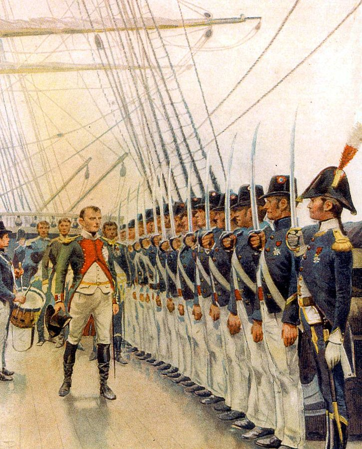
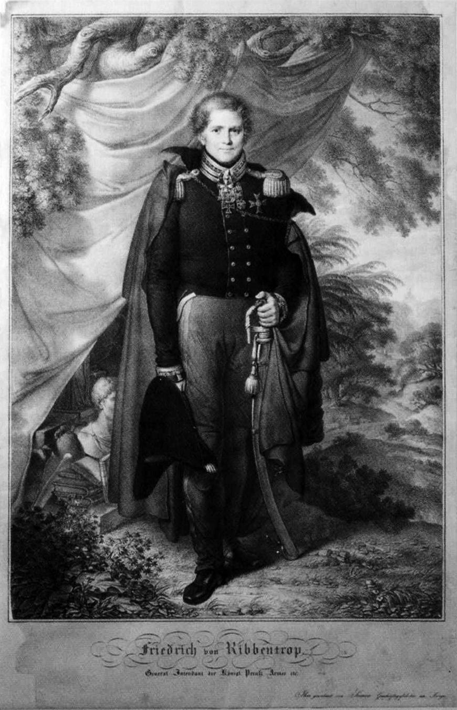
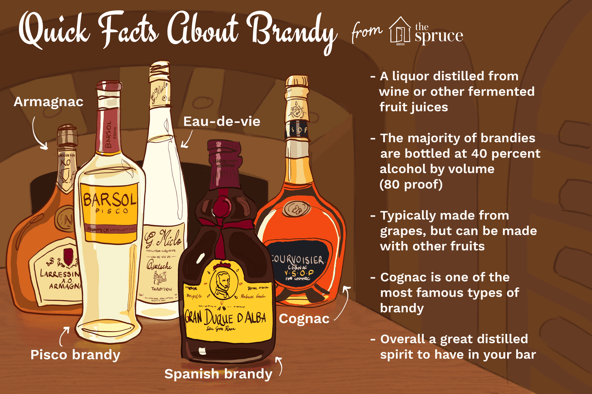
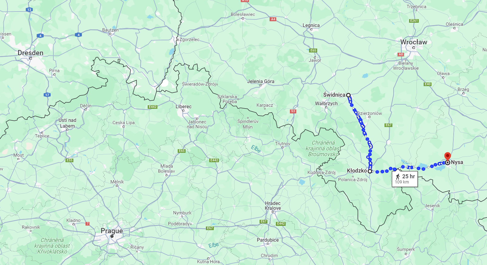
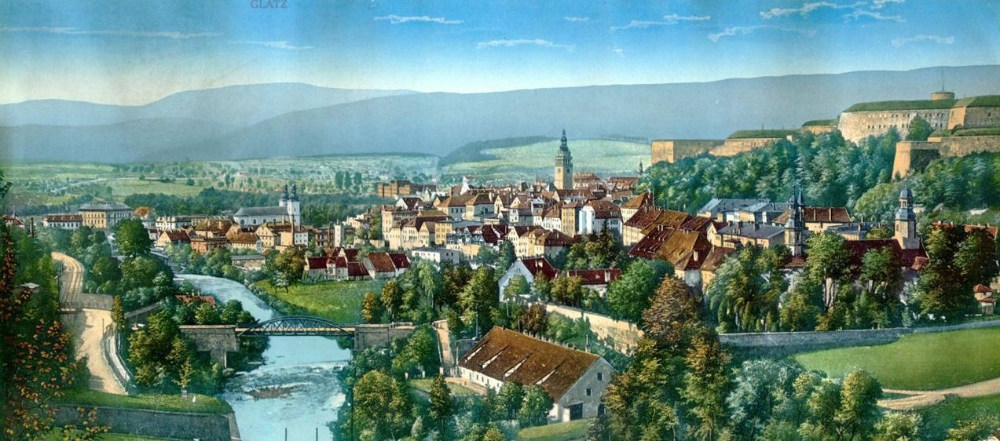
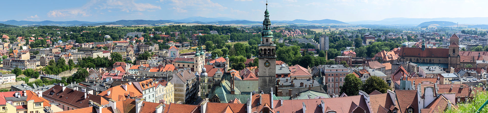

새로운 전쟁의 준비 (4) - 와인 대신 브랜디를 준비한 뜻
게시: 2023-11-06T06:30:15+09:00
전에 언급한 것처럼 슐레지엔 방면군에는 이런 국민방위군이 특히 많이 배정되었습니다. 이렇게 암울한 군대를 이끌고 진격을 해야 하는 블뤼허의 심정은 얼마나 처참했을까요? 그런데 그렇지가 않았습니다. 7월 20일 러시아 콘스탄틴 대공과 함께 국민방위군 대대들을 검열한 블뤼허는 그나이제나우에게 편지를 써서 부대들의 준비 상태가 매우 훌륭한 것에 대해 콘스탄틴 대공도 감탄했다며 만족스러워 했습니다. 대체 어떻게 된 것일까요? 아마 군대는 예나 지금이나 윗선에 '보여주기' 방식으로 운영되는 경우가 많았나 봅니다. 검열받는 부대가 다른 부대들로부터 군복과 무기, 심지어 병사들 자체도 빌려 왔던 모양이라고 짐작만 할 뿐입니다.

(군대에서 가장 힘든 것이 훈련보다는 검열이라고 저 개인적으로 생각합니다. 그림은 1811년 쉘부르의 해군 함대를 검열 중인 나폴레옹의 모습입니다.)
이런 눈가리고 아웅하는 식의 사무 처리로는 장군들의 허영심을 채울 수는 있어도 실전에서의 승리를 가져올 수는 없었습니다. 승전은 고사하고, 일단 군대가 부대 단위로서 유지되려면 무엇보다 먹을 것과 마실 것이 충분해야 했습니다. 원래 위는 속일 수 있어도 아래는 속일 수 없다고, 군량은 절대 남의 부대 것을 검열 때만 잠깐 빌려오는 식으로는 넘어갈 수 없었습니다. 이 부분에서 프로이센은 진지했습니다.

(블뤼허의 친구였던 리벤트롭의 초상화입니다. 그가 들고 있는 검은 제4차 대불동맹전쟁 이후 프로이센을 실질적으로 지배한 프랑스군에 저항하여 반란을 일으켰다가 전사한 페르디난트 폰 쉴(Ferdinand von Schill) 소령의 검이라고 합니다. )
슐레지엔 방면군의 병참감인 리벤트롭(Friedrich Wilhelm Ribbentrop)은 이제 진격에 나설 슐레지엔 방면군을 위해 최선을 다했습니다. 그는 각각의 여단에게는 3일치의 건빵과 4일치의 쌀, 소금, 고기, 밀가루와 브랜디를, 그리고 예비용 보급창에는 4일치 건빵과 8일치의 브랜디를 준비시켰습니다. (일개 병사들을 위해 맥주나 와인도 아니고 독하고 비싼 브랜디를? 이라고 생각하실 수 있는데, 그건 아래에서 다시 설명하겠습니다.) 군마를 위해서는 2일치의 곡물 사료를 준비시켰습니다. 역시 말은 벌판의 풀을 뜯어먹을 것이므로 사료가 다소 부족해도 된다는 생각이었습니다. 말이 쉬워서 '준비시켰다'라고 하지만, 10만이 먹어야 할 식량을 준비하는 것은 보통 일이 아니었습니다. 누군가가 막대한 돈을 내야 했습니다. 이런 부담은 고스란히 슐레지엔 주민들이 감당해야 했습니다. 이렇게 모은 식량 덕택에 블뤼허 휘하의 각각의 여단들은 출정할 때 1달치의 식량을 휴대할 수 있었습니다. 더 많은 식량은 마차 등 수송 역량의 한계 때문에 진격할 때 가지고 갈 수도 없었고, 그 이후의 식량은 이제 앞으로 진격할 작센 현지에서 현지 조달하면 되었기 때문이었습니다.

(브랜디는 과실 발효주를 증류해서 만든 술의 통칭입니다. 보통은 와인을 증류한 것을 브랜디라고 부릅니다. 반면 곡물을 증류한 술에는 위스키, 진, 보드카 등이 있습니다. 와인에 부피 단위로 매겨지는 관세를 피하고자 네덜란드 상인들이 와인을 증류해서 독하게 응축한 것에서 시작되었다는 전설이 있듯이, 와인보다 독하고 부피는 더 작습니다. 당시 프랑스군의 배식에서도 매일 나오는 주류는 와인으로는 1/4 파인트였지만 브랜디로 나올 때는 1/16 파인트가 지급되었습니다.) 가령 요크의 군단은 180대의 마차를 보유하고 있었습니다. 이들 마차가 모두 4두 마차라고 가정하면 1대당 1.36톤을 나를 수 있는데, 병사 1인당 빵과 고기, 브랜디 등 하루 보급품을 0.8kg이라고 하면 요크 군단 소속 3만 병력의 10일치 식량을 나를 수 있는 수송 역량을 가진 셈이었습니다. 그러니까 리벤트롭이 병사들이 마실 것 음료로 브랜디를 준비시킨 것도 나름 이유가 있었던 것입니다. 와인을 준비했다면 와인을 증류하여 만든 브랜디보다 4배 더 많은 무게를 실어날라야 했기 때문입니다. 수송 능력이 고작 10일치의 군량에 국한된다고 10일 만에 전쟁을 끝낼 수는 없었습니다. 따라서 각 군단마다 별도로 6일치의 군량을 보관한 3개의 보급창과 2개의 야전 제빵소를 준비했습니다. 이번 하계 작전을 준비하는 프로이센의 각오는 이 식량 조달에서도 드러났습니다. 일단 무거운 와인 대신 가벼운 브랜디를 준비시킨 것이 진격에 대한 강한 의지였습니다. 그리고 위와 같이 각 부대에게는 1개월치의 식량이 지급되었지만, 정작 각각의 시정부에게 내려진 식량 조달 명령은 훨씬 더 많은 분량을 모으라는 것이었습니다. 가령 프랑켄슈타인(Frankenstein) 시정부는 12만 병력과 4만 마리의 군마를 위한 4개월치 보급품을 마련하라는 명령을 받았습니다. 리그니츠(Liegnitz) 시정부도 3개월치 보급품을 준비하라는 명령을 받았습니다. 이렇게 모은 식량 중 블뤼허에게 지급된 것은 1달치였고, 나머지는 3개월치는 슈바이트니츠(Schweidnitz), 글라츠(Glatz), 나이서(Neisse) 등의 요새에 균등하게 나누어 보관했습니다. 블뤼허의 방면군이 진격을 하면 다행이지만, 지난 봄처럼 후퇴를 해야 하는 경우에도 항복하지 않고 그런 요새들을 기반으로 농성할 계획까지 세웠던 것입니다.

(슈바이트니츠(폴란드어로 Świdnica 스비드니차), 글라츠(Kłodzko 쿠오츠코), 나이서(Nysa 니사)를 선으로 엮은 지도입니다. 저 세 도시 사이의 거리는 총 109km, 걸어서 3~4일 정도입니다.)

(19세기 초반 글라츠의 전경을 그린 그림입니다. 글라츠는 원래 오스트리아 합스부르크의 지배를 받았으나 18세기 슐레지엔 전쟁 때 프로이센 땅이 되었습니다. 그림 오른쪽에 보이는 요새는 프로이센이 지어놓은 것인데, 저 요새 덕분에 글라츠는 제4차 대불동맹전쟁 때도 프랑스군에게 끝까지 항복하지 않고 버틸 수 있었습니다. 그러나 폴란드인들에게는 좋지 않은 곳으로서, 19세기 폴란드 민족주의 투쟁 때는 폴란드의 지식인들이 저 요새에 수감되어야 했습니다. 저 요새는 지금도 남아 있습니다.)

(글라츠, 아니 쿠오츠코는 독일이 WW2에서 패전한 결과 이제 폴란드의 도시가 되었습니다. 주인은 바뀌었지만 여전히 아름다운 소도시입니다. 인구는 2만7천 남짓입니다.) 이렇게 프로이센은 이번에야말로 나폴레옹이 몰락하든 프로이센이 망하든 사생결단을 본다는 각오였습니다. 그런 프로이센의 의지가 사람의 형태로 구현된 것이 바로 블뤼허라고 할 수 있었습니다. 한동안 명확히 임명되지 않았던 슐레지엔 방면군 사령관이 마침내 블뤼허로 발표 나던 8월 9일, 보헤미아로 떠나기 직전이었던 러시아군 사령관 바클레이는 블뤼허를 라이헨바흐의 연합군 사령부로 초대합니다. 초대의 이유는 전략 논의였습니다만, 실제 내용은 연합군 수뇌부에서는 이미 이야기가 끝난 라이헨바흐 작전 계획에 대한 통보와 설명이었습니다. 약간 의아한 일입니다만, 프로이센 국왕과 그의 참모들이 모두 동의했던 이 작전안에 대해 정작 블뤼허와 그나이제나우는 아직 정식으로 통보 받은 바가 없었던 것입니다. 이미 아시다시피 라이헨바흐 작전안을 요약하면 각 방면군은 나폴레옹군의 측면 또는 후면을 괴롭히되 절대 우세한 적과는 교전하지 말고 항상 적과 접촉을 유지하여 적의 행동을 제약하라는 것이었습니다. 그러나 이를 들은 블뤼허는 그런 수비적인 작전에는 절대 동의할 수 없다며 그런 작전을 하느니 차라리 사령관직을 내려놓겠다며 사의를 표명했습니다. 이런 용감한 군인다운 태도이면서도 당돌하기 짝이 없는 행동에 바클레이는 당황했습니다. 그는 블뤼허에게 쩔쩔 매며 그건 자신의 설명을 오해한 것일 뿐 수비만 하라는 이야기가 절대 아니라고 해명헤야 했습니다. 기선을 잡은 블뤼허는 바클레이에게 알렉산드르와 프리드리히 빌헬름 두 군주로부터 명확하게 공격을 허가한다는 지침서를 문서로 받아 주거나 아니면 자신에게 차라리 다른 보직을 달라고 요구했습니다. 물론 바클레이는 감히 그러지 못했습니다. 블뤼허는 며칠 동안을 기다려도 자신에게 다른 보직이 오지 않는 것을 보고는 자신의 요구를 두 군주가 받아들였다고 제 멋대로 해석했습니다. 이는 나중에 매우 중대한 결과를 낳게 됩니다. Source : The Life of Napoleon Bonaparte, by William Milligan Sloane Napoleon and the Struggle for Germany, by Leggiere, Michael V https://en.wikipedia.org/wiki/K%C5%82odzko https://www.thespruceeats.com/all-about-brandy-760698 https://en.m.wikipedia.org/wiki/File:Napol%C3%A9on_inspectant_l%27escadre_de_Cherbourg_en_mai_1811_-_Rougeron_et_Vignerot.jpg
{kind=link}
https://www.wikidata.org/wiki/Q1463953#/media/File:Friedrich-Ribbentrop_(1838).jpg
.jpg){kind=link}